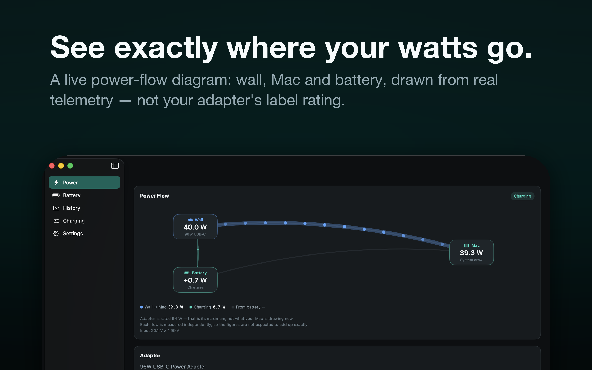
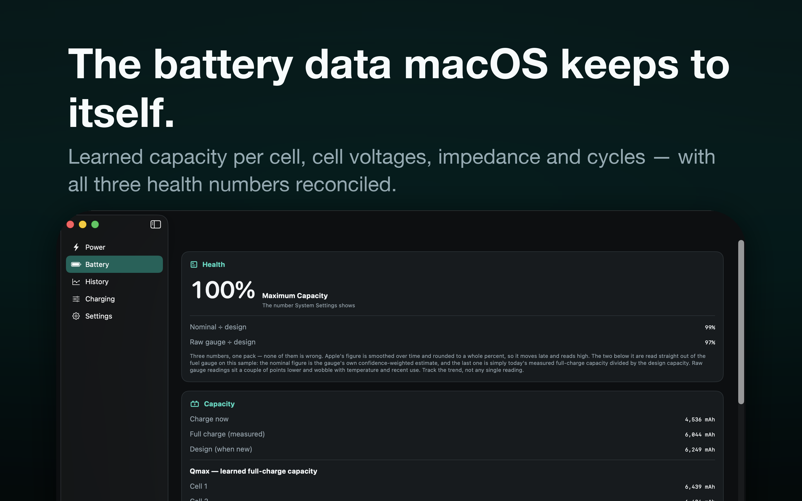

Battery charge management and power intelligence for Mac.
Voltway draws a live power-flow diagram of your Mac — how many watts are coming out of the wall, how many the Mac is using, and whether the battery is charging or supplying — and opens up the battery data macOS keeps to itself: learned full-charge capacity per cell, cell voltages, a live per-cell impedance reading, cycle count, and how long the pack has been sitting at a high state of charge.
With the optional helper it also controls charging: hold a limit below 80%, set separate stop and resume levels, or run from the adapter without charging at all.


Voltway is a Mac app. There is no iPhone or iPad version, and that is deliberate: Apple provides no way for any third-party app to limit, stop or slow charging on iOS, and iOS exposes no battery health data to apps at all. An iPhone app could only have watched a 5%-rounded number and nagged you, so we did not ship one. Newer iPhones have a built-in charge limit in Settings › Battery › Charging.
No Mac lets software set a charging speed. There is no charge-rate control on any Mac, so Voltway does not claim one.
Limiting charge means writing to your Mac's system power controller, which needs privileges a Mac App Store app is not allowed to have. Rather than ask for them, Voltway keeps that work in a small, separate, notarized helper that you install yourself. The App Store app never escalates and never installs anything.
The helper is a root background daemon that starts at every boot and listens only on your Mac's loopback interface. The Voltway charge helper page explains exactly what it installs, why it has to work that way, and how to remove it.
Voltway is free to use, and the entire read-only side is free forever: the live power-flow diagram, the full battery forensics, the charge-residency histogram, and CSV export of your charge log. No helper, no privileges, no nagging. Voltway Free keeps the last 7 days of charge history.
Voltway Pro adds the charge-control tools — hold a limit below 80%, set separate stop and resume levels, and run on the adapter without charging — and it keeps your full charge history instead of the last 7 days. The charge-control tools also need the free helper download; the history is unlocked by Pro alone.
Prices shown are US App Store prices; your own storefront may differ. Subscriptions renew automatically unless cancelled at least 24 hours before the period ends, and are billed to your Apple Account. All three plans unlock the same features.
App Store › your name › Account Settings › Subscriptions. You can also click Manage or Cancel Subscription on Voltway's Membership screen. Subscriptions renew automatically unless cancelled at least 24 hours before the period ends.
Open Voltway's Membership screen and click Restore Purchases. Make sure you are signed in with the same Apple Account you bought with — a purchase cannot be moved between Apple Accounts.
Because macOS genuinely reports three. Apple's figure is smoothed and rounded to a whole percent; the other two come straight from the fuel gauge. Voltway shows all three rather than hiding the ones that disagree — track the trend, not any single reading.
Recent Macs have their own charge limit built into macOS. Voltway shows you when that is what is holding the battery, so you know it is the system and not a fault.
It samples only while you are looking at it, and stops when its screens are off-screen. A battery app that costs you battery would be a poor trade.
Not in the app. Voltway reads per-cell impedance live and shows it every time you open the Battery screen, but it does not store those readings, so there is no chart of them. Write the numbers down if you want to compare them later — what matters is whether they drift upward over months, and whether one cell pulls away from the others.
Bug reports, questions and feature requests: mwsupplylimited@gmail.com